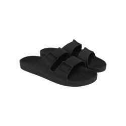

Adir Cruz Bard
Início
Mensagem
Surpresa
Abrir Presente 🎁

Para comemorar você irá ganhar esse chinelo da marca Linus.
A sandália Linus Chumbo carrega uma cor clássica, mas marcante. Uma ótima ideia para quem quer dar um toque mais urbano no visual. A sandália mais confortável que já experimentou. 😎